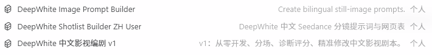

Daily Build Log · No. 002
从故事到画面：
拆解 3 个 DeepWhite 影视技能
今天不做零散工具介绍，而是把“写故事、定画面、拆镜头”三种能力放在同一条生产线上，看看它们分别解决什么问题。
AI 影视创作最容易出现的误区，是把“会写剧本”“会写图像提示词”“会写视频提示词”当成同一件事。实际上，这三种工作面对的是三类完全不同的问题：故事有没有戏、画面有没有统一视觉、镜头能不能稳定执行。今天我把手里的三个 DeepWhite 技能重新梳理了一遍，也第一次真正看清它们怎样组成一条从创意到可生成画面的生产线。

中文影视编剧 v1
负责故事、人物、结构、场景与对白，让一个想法先成为真正可拍的剧本。
02Image Prompt Builder
负责静态视觉，把模糊画面翻译成中英双语、可直接生成的图像提示词。
03Shotlist Builder ZH
负责导演与执行，把剧本拆成位置、构图、动作、机位、音效和视频提示词。
The Production Line
它们不是三个孤立工具，而是三个连续工位
前一个技能解决“内容是否成立”，中间技能建立“视觉是否清楚”，最后一个技能保证“镜头是否可执行”。
故事工位：先把“想法”写成剧本
确定高概念、人物欲望、冲突、结构、分场和对白，检查因果与节奏。
产出：梗概、人物弧光、结构大纲、分场、场景、诊断报告。视觉工位：把“文字”变成参考图
把角色、环境、道具、海报与关键时刻写成构图明确的双语图像提示词。
产出：人物设定图、场景概念图、道具图、海报和关键静帧。导演工位：把“剧本+资产”变成镜头
确认资产、空间位置和时间划分，再写动作、构图、机位、声音与 Seedance 提示词。
产出：中文分镜、视频提示词、素材对照表和制作网页。Story Development & Script Doctor
DeepWhite 中文影视编剧 v1：先解决“故事为什么值得看”
这是一个中文影视编剧工作室型技能。它既能从一个模糊灵感开始孵化概念短片、微短剧、短片、长片和多集剧，也能接手已有梗概或剧本，做诊断、量化评分、精准修改、对白打磨与节奏删减。
它接收什么、如何处理、最终给出什么
一句灵感、主题、故事梗概、分场大纲、剧本片段，或一份需要诊断的完整剧本。
从高概念、人物弧光到场景价值转变，再检查因果链、人物缺陷、危机、高潮和结局。
输出梗概、结构、分场、场景或诊断报告；避免心理说明、说教独白和书面化 AI 腔。
它重点解决的四类问题
把“这个设定挺有意思”继续追问成核心动作、欲望、阻碍、代价与变化。
检查事件是否互相推动，而不是一串“然后发生了……”的情节堆积。
压掉解释性台词，改成可以通过动作、停顿、声音和潜台词感受到的戏。
通过结构、人物、场景价值、节奏和可拍性评分，把问题排出修改优先级。
它的工作方式为什么更可靠
确认体量、高概念和核心戏剧动作，避免一上来就写长篇正文。
明确 Want、Need、Arc；长篇内容进一步补足人物前史、谎言与缺陷。
建立开场钩子、激励事件、递进冲突、高潮和结尾，再为每场标注目标、阻碍、结果与价值变化。
场景文字只保留镜头能拍到、麦克风能听到的内容，让文本直接服务拍摄。
每个正式阶段都允许“通过、修改或自检”，不会在方向尚未确认时一次性生成整部剧本。
最终呈现出来的效果
“我想做一个关于记忆被删除的科幻短片。”
高概念、人物欲望与缺陷、冲突升级、结构节点、分场时长、可拍场景和修改优先级。
Still Image Prompt Design
DeepWhite Image Prompt Builder：把“脑中的画面”翻译给图像模型
这个技能只处理静态图像。它可以把一句视觉想法、剧本片段或风格说明，整理成可以直接使用的英文提示词和中文提示词，用于角色设定、场景概念、关键静帧、海报、插画或产品画面。
它的核心不是“堆关键词”，而是建立可见的画面结构
一个完整提示词会按视觉逻辑组织信息，让主体、空间、构图、光线、材质与色彩互相服务，而不是把几十个风格词机械拼在一起。
它解决了什么
把高级、梦幻、压抑、纪实等感觉拆成光源方向、对比度、色温、材质、景深和构图。
让提示词先说清楚“谁在做什么”，再补环境和风格，避免模型只抓到装饰词。
把时代、服装、光线哲学、色彩和材质写成稳定的风格约束，方便系列化生成。
同时提供英文和中文版本，两者保持同一视觉意图，而不是生硬逐字翻译。
面对长剧本时，它会先挑“最值得被看见的瞬间”
- 人物首次亮相：建立角色脸、服装、气质和时代信息。
- 环境建立画面：确定世界观、空间尺度、光线与材质语言。
- 关键道具：固定会影响剧情的物件、文字、磨损和使用方式。
- 情绪特写与高潮定格：留下最能代表人物变化和宣传价值的画面。
- 海报画面：把主题、人物关系与视觉符号压缩到一张静态图中。
呈现效果：一份可以直接复制的双语视觉说明书
English Prompt [subject and action] + [environment] + [composition] + [lighting] + [material] + [lens] + [color grading] 中文提示词 [主体与动作] + [空间情境] + [画面构图] + [光线情绪] + [材质细节] + [镜头语言] + [色彩分级]
Directing, Blocking & Seedance Prompts
DeepWhite Shotlist Builder ZH User：把剧本变成真正能执行的镜头
这个技能面向中文影视分镜和 Seedance 2.0 视频提示词。它不只是把剧本按句切开，而是像导演和现场执行团队一样，继续决定人物站位、画面构图、机位、动作节拍、环境活动、音效和可能的模型失败点。
为什么它设置了六道确认门
AI 视频最常见的问题，不是提示词不够华丽，而是前面的生产信息没有确认。这个技能用六道门把容易返工的决定提前锁定。
核对人物、场景、道具、风格图和可选故事板，避免文件与角色错配。
多人、关键道具与复杂机位先画俯视位置图，锁定前后左右、朝向和距离。
先确认剧情分成几条提示词，每条最多覆盖 15 秒，同时避免过度切碎。
如果改变最终提示词结构，先展示模板并确认，避免输出格式悄悄漂移。
明确最终要 HTML 制作网页，还是只要按顺序排列的文字提示词。
检查长中文换行、列布局与移动端稳定性，防止提示词重叠或溢出。
每个镜头最终会被写到什么程度
镜头内部保持固定顺序，让生成模型和制作人员都能快速找到关键信息：
人物当前状态
区域与空间锁定
视角与运动逻辑
表演微节拍
环境与事件声音
风格部分还会明确全局画质、人物材质、灯光与风格、核心特效；人物情绪不会只写“紧张”，而会继续拆成呼吸、眼神、肌肉、皮肤、姿态和发生顺序。
它重点解决的生成失败
通过俯视阻挡图和构图区域锁定人物、道具、前后关系与遮挡关系。
连续地点、人物和情绪逻辑一致时，优先合并为一条 8—15 秒的完整提示词。
每个镜头必须包含动作、机位和音效，情绪也要落到身体的微变化上。
为每个提示词建立资产对照表，写清素材句柄、原文件、用途和使用镜头。
最终呈现出来的效果
【全局画质】真实电影摄影与稳定物理质感…… 【人物材质】皮肤、发丝、呼吸与衣料受力…… 【灯光与风格】由剧本和已确认参考图建立…… 【核心特效】烟尘、雨水、火焰或能量的物理行为…… 画面动作概述：角色在压力下完成一个明确动作…… 画面构图：人物位于左三分区，道具在中景右侧…… 机位：镜头跟随情绪变化推进…… 动作：拆成可观察的身体微节拍…… 音效：环境底噪、衣料摩擦与关键事件声……
How To Choose
三个技能怎么选：先看你现在卡在哪一步
它们有交集，但不能互相替代。最简单的判断方式，是看当前缺的是故事、画面，还是镜头执行。
| 技能 | 最适合的输入 | 核心解决 | 主要产出 | 不负责 |
|---|---|---|---|---|
| 中文影视编剧 v1 | 灵感、梗概、分场、剧本 | 故事结构、人物、因果、对白、节奏 | 可拍中文剧本与诊断报告 | 图像生成参数、视频镜头执行 |
| Image Prompt Builder | 视觉想法、剧本片段、风格说明 | 静态画面的主体、构图、光线、材质与风格 | 中英双语图像提示词 | 时长、运镜、音效、镜头时间轴 |
| Shotlist Builder ZH | 剧本 + 已确认资产 + 风格参考 | 空间连续、时间切分、动作、机位、声音和模型失败预防 | 中文分镜、Seedance 提示词与 HTML 制作页 | 替代前期故事开发 |
A Practical Example
如果我现在要做一条 AI 概念短片，会怎样使用它们
以“一名老人能删除自己的痛苦记忆，但每删除一次也会忘掉一个爱他的人”为例。
把设定变成 3 分钟概念片：明确老人真正想要什么、删除记忆的代价、冲突如何升级，以及结尾留下哪一个无法删除的动作。
为老人、记忆诊所、删除设备、家庭照片和高潮静帧分别写双语图像提示词，先生成稳定的角色与环境资产。
导入剧本与资产，确认人物和设备位置，划分每条不超过 15 秒的提示词，再写构图、机位、动作、音效和风险警告。
此时拿到的已经不是一句“做个科幻短片”，而是一套故事、视觉资产和镜头执行说明，可以直接进入视频生成、配音、配乐和剪辑。
今天最大的收获： 好的 AI 技能不是替我“按一下就生成”，而是替创作建立边界、检查点和交付标准。编剧技能守住故事，图像技能守住视觉，分镜技能守住执行；三者连起来，AI 影视才从一次碰运气的生成，变成一条可以复用、检查和迭代的工作流。
下一步，我会用一份真实剧本跑完整条流程，把三个技能的中间产物、修改过程和最后生成效果继续记录下来。
查看全部日志与文章